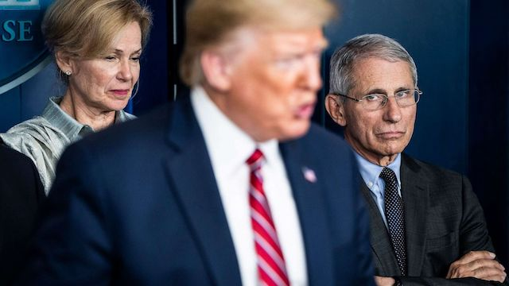
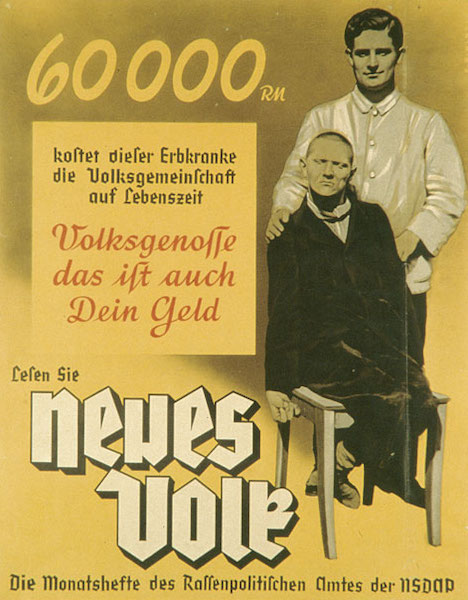

2020-04-14 08:00
In late March Donald Trump told the press corps, “Our country wasn’t built to be shut down […] This is not a country that was built for this.” Since then Trump seems to have backpedaled on his notion to open the nation for business on Easter Sunday — presumably to the peals of church bells announcing the resurrection of the nation and his own polling numbers. But in a move calculated to sideline the nation’s infectious disease experts — including some of his own advisors — Trump is back at it again.
You never thought the pit bull was going to let go of your pants leg, did you?

Trump recently announced the formation of an “Opening Our Country Council.” He indicated that neither his son-in-law and daughter nor the Vice President would be involved, and it is still unclear who will actually be on the council, or why it is really necessary. Regardless, Trump claims that he — not state governors — has “total authority” to decide when workers will be forced to return to work — without testing, without masks, and without sufficient ICU beds or ventilators to let them survive the COVID-19 infections they will receive by returning too soon to the germ pool.
Trump may not have a plan for dealing with the Corona virus, but he claims total authority to carry out that plan.
Naturally, the nation’s governors are pushing back. New York governor Andrew Cuomo said that before anyone talks about “opening” the nation for business the first order of business will be testing. Connecticut governor Ned Lamont announced that social distancing would remain in effect until at least May 20th, and New Jersey governor Phil Murphy said that economic recovery depends entirely on public health safety.
As for Trump’s “total authority,” Cuomo told CNN, “The president does not have total authority. We have a constitution, we don’t have a king, we have an elected president.” University of Texas Constitutional Law professor Stephen Vladeck agreed, slamming Trump’s authoritarian move: “Nope. That would be the literal definition of a totalitarian government—which our traditions, our Constitution, and our values all rightly and decisively reject.”
With the nation in the grip of both a deadly pandemic and an incompetent fascist wannabe, the nation’s governors have been left to their own devices.
California governor Gavin Newsom announced that his nation-state of California had no choice but to fend for itself given Trump’s inaction and incompetence. California, together with Oregon and Washington, has formed a regional alliance to plot its own course for economic recovery. The same strategy has been adopted by an alliance of Northeast governors from New York, Massachusetts, Rhode Island, Connecticut, Pennsylvania, New Jersey, and Delaware.
When Hong Kong temporarily suspended its lockdown after a few weeks, it experienced a spike in new infections and was forced to lock down citizens again. The same sort of spike occurred in Singapore after it prematurely relaxed social distancing. So we know that keeping people sheltered in place must go on much longer, and we know that only testing will tell us how much of the population has been exposed and how much has recovered.
Fifty million Americans receive Social Security payments and many workers are either salaried or still manage to draw an income. These lucky enough to own their homes and have health insurance have a sense they will probably survive the pandemic. For the most part, this segment of America has enjoyed a healthy life of adequate and nutritious food, clean water and a clean environment, and does not have disproportionately high rates of diabetes, hypertensions or asthma. This privileged segment of America does not live in crowded apartments in polluted neighborhoods for which they must pay rent, is not forced to commute during a pandemic on crowded subways or buses, and can afford to have someone else deliver food and supplies to their homes.
But for the rest of America, life is incredibly precarious — and has always been. African Americans, Latinos, Indigenous people, the working class, the working poor, and the disabled are at elevated risk and are dying in shameful numbers. There is an old saying something like, “When white folks catch a cold, black folks get pneumonia.” By sending America’s most vulnerable back to work without adequate protections, we are sending some to their deaths — all for the sake of corporate greed. And because their lives do not hold particularly great value by policy makers.
As we now contemplate the frightening lack of hospital beds and ventilators — and who must die for lack of one — the rules for triage are revealed as decidedly racist. On April 7th Massachusetts Secretary of Health and Human Services Marylou Sudders released a memo entitled “Crisis Standards of Care Planning Guidance for the COVID-19 Pandemic” which described state guidelines for making decisions about who receives care and who doesn’t during the global pandemic. The memo describes the recommendations of a panel of medical professionals in which those with the lowest scores have the highest priority for treatment. “But among the factors giving patients a higher score, and therefore, a lower priority for medical intervention are health conditions common to black, Latino and Asian people including diabetes, hypertension and obesity.”
Oh, well, they’re just going to die anyway.
Similarly, Alabama’s 2010 triage handbook for ventilator use puts a low premium on the lives of disabled people: “persons with severe mental retardation, advanced dementia or severe traumatic brain injury may be poor candidates for ventilator support.”
We are not so very far away from the world of 1935, when a magazine called “New People” published by the new German “Racial Politics Office” pointed out to subscribers:
“60,000 Reich Marks is the cost to society of caring for those with congenital diseases. Citizens, this is your money.”
